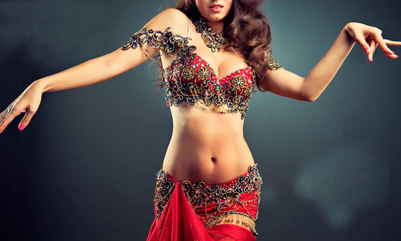
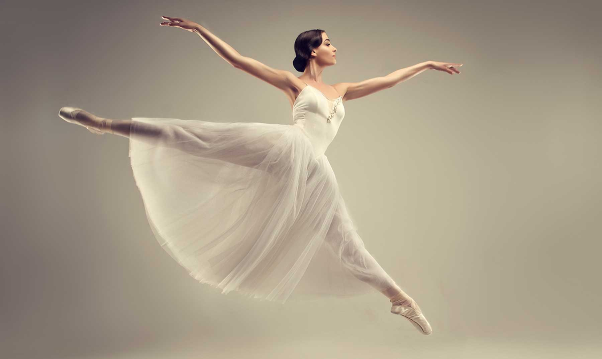
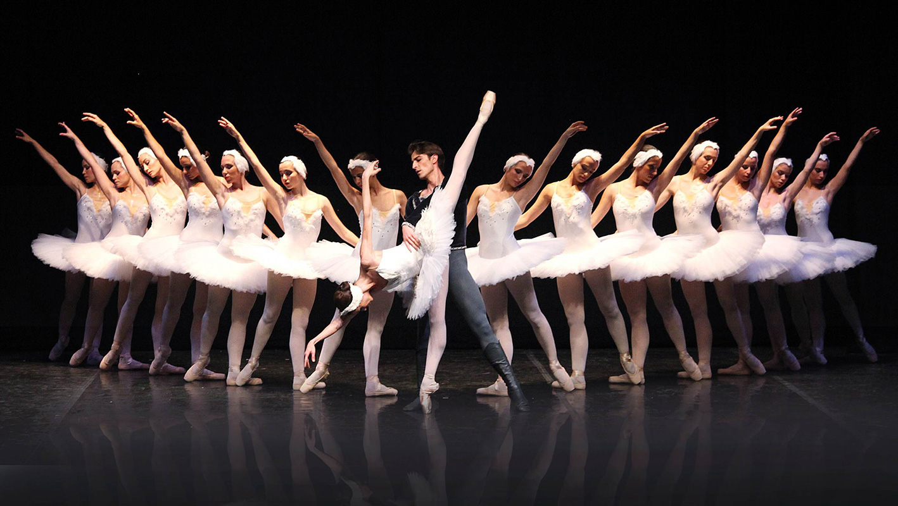
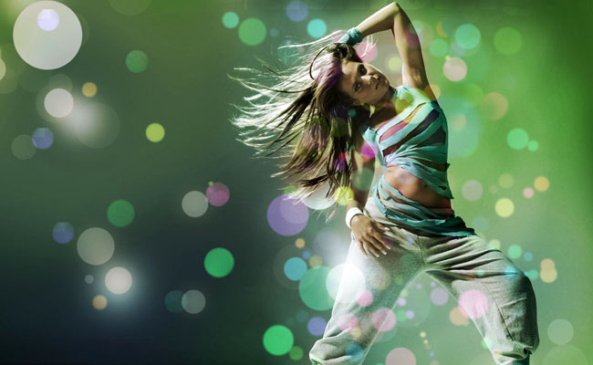
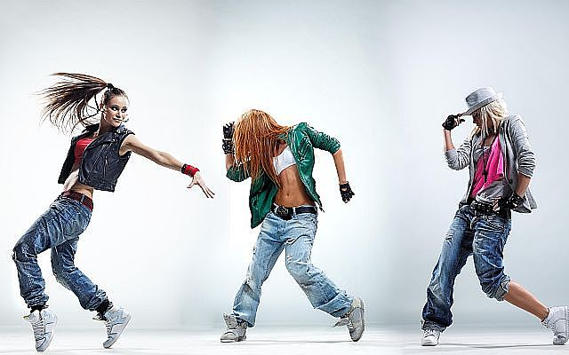
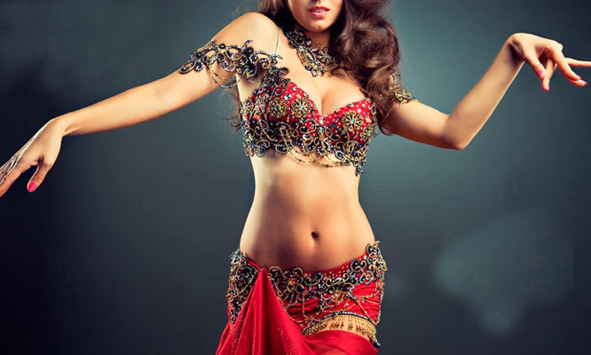
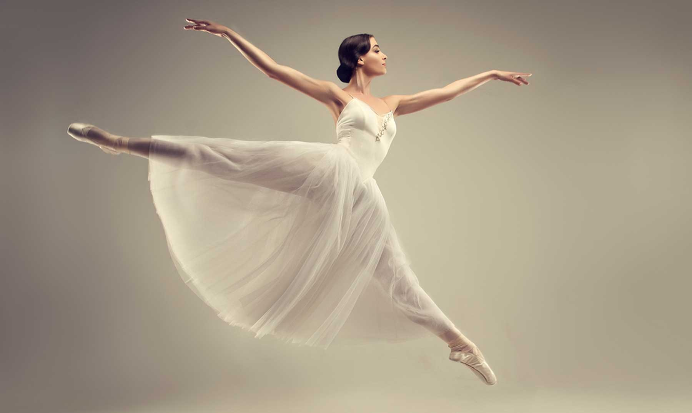
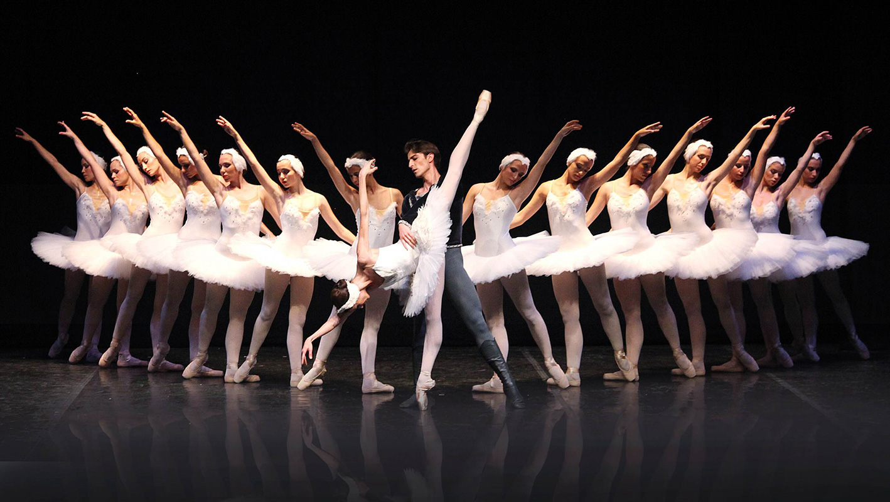
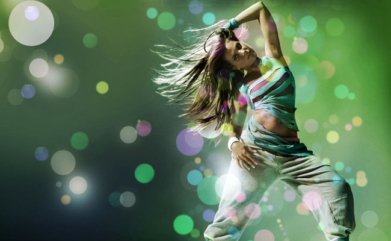
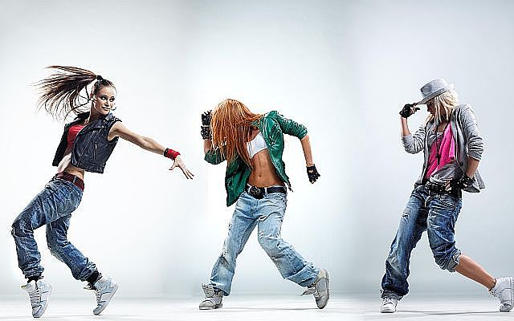
Dance City ha formado no solo bailarines y profesionales en el área del movimiento sino artistas y hermosos seres humanos, dentro de un clima familiar que el mismo instituto se ha propuesto seguir manteniendo. Sostiene como objetivo primordial brindar un espacio propicio para un aprendizaje integral, donde el alumno es respetado y contenido, en un ambiente que promueve la creatividad y la expresividad. Gracias a los que compartieron y comparten esta pasión por el arte, y a los nuevos integrantes, bienvenidos!
Se influenció del reggae en español de Panamá y se desarrolló en Puerto Rico en 1990; surgió a raíz de la popularidad del reggae jamaicano, junto con el hip hop estadounidense durante los inicios de esa época. Posteriormente, el reguetón se apartó poco a poco del reggae, pero siguió usando los mismos instrumentos y ritmos musicales pero con diferentes letras y melodías. Esto se debió a que en Puerto Rico se usaban beats de reggae sobre bases de rap pero con letras y composiciones diferentes
El ballet clásico o danza clásica es una forma de danza cuyos movimientos están basados en el control total y absoluto del cuerpo, se recomienda empezar desde temprana edad debido a su grado de dificultad. Esta requiere no solo esfuerzo, actitud, compromiso,sino que también, debe ser considerada un estilo de vida. A diferencia de otras danzas, en el ballet cada paso está codificado. Participan invariablemente las manos, brazos, tronco, cabeza, pies, rodillas, todo el cuerpo en una conjunción simultánea de dinámica muscular y mental que debe expresarse en total armonía de movimientos
El raqs baladi رقص بلدي (danza del pueblo) es una danza muy elemental, prácticamente sin desplazamientos y con movimientos principalmente de pelvis. La evolución de esta danza es la moderna Danza oriental o raqs sharqi. El raqs sharqi incluye movimientos del folclore egipcio, danza occidental clásica y contemporánea, con grandes desplazamientos, vueltas y movimientos de todas las partes del cuerpo, pero sobre todo de la pelvis. En Turquía, a la danza del vientre se la conoce como gobek dans o rakasse (ritmo turco). Antes de llegar a la evolución de la danza como espectáculo artístico, no se puede soslayar el significado puramente de estímulo sexual destinado al hombre en las sociedades de esos países y regiones, tanto como al agasajar invitados, como en la intimidad del harén
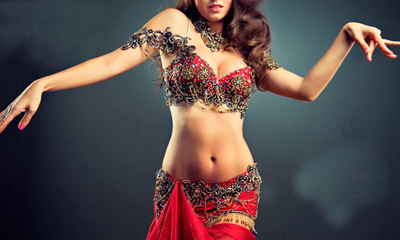
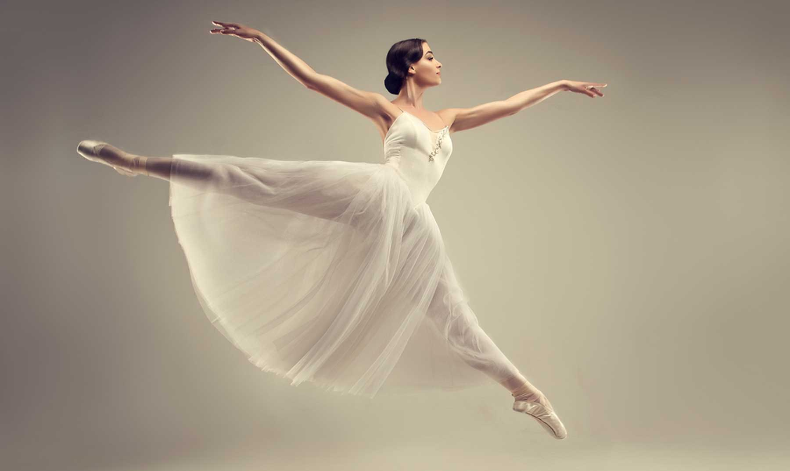
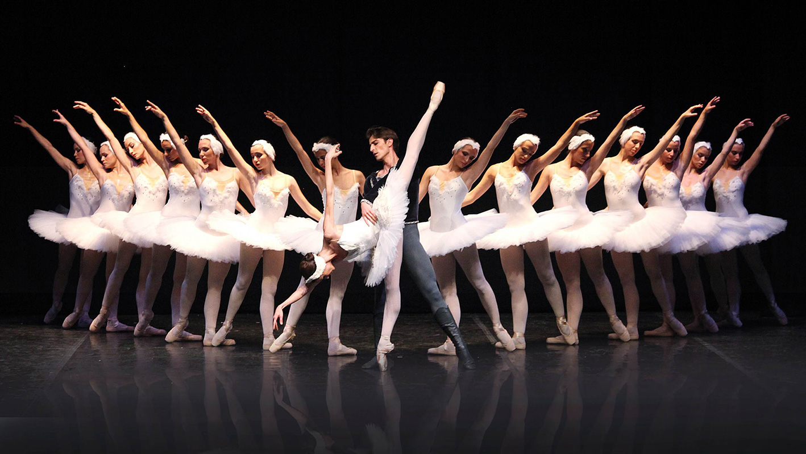
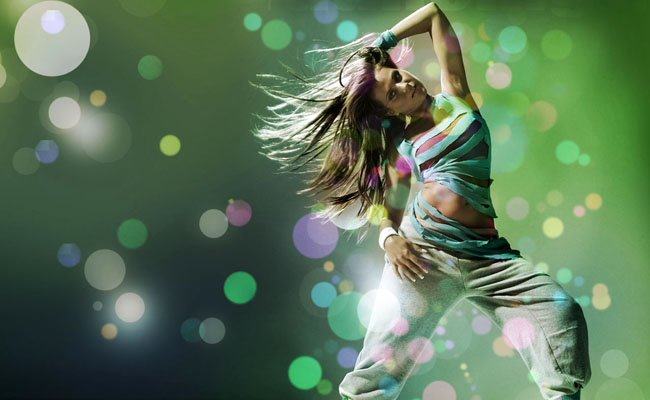
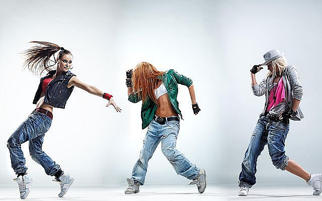